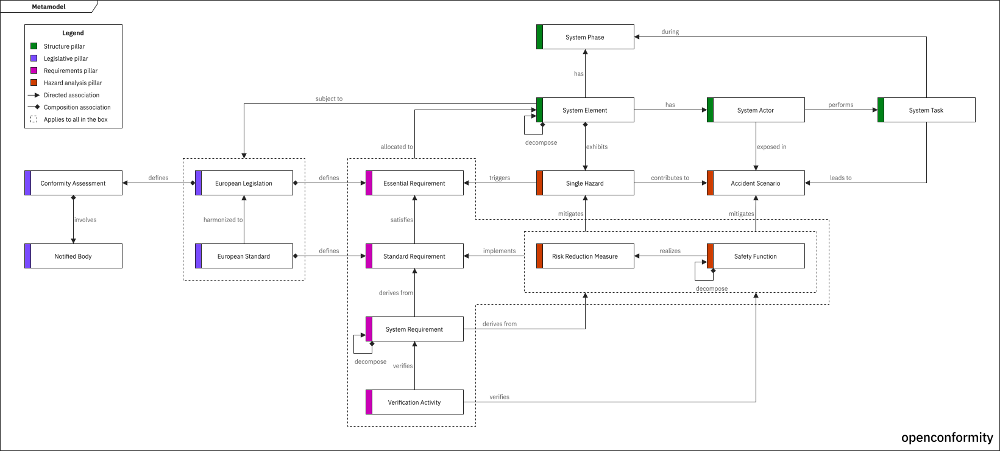

About
The openconformity project is an initiative to develop a free, open-source, browser-based tool for CE marking of machinery according to the Machinery Regulation (EU) 2023/1230. With no commercial interests behind the project, the idea is to provide a browser-based tool that runs entirely client-side, with no installation or account required.
Concept
The idea behind the tool is to offer an approach to CE marking using concepts borrowed from the domain of Systems Engineering. The CE marking work is built as a model, using entities with semantic relationships between them, where each entity carries its own attributes. The semantic relationships represent the meaningful connections between the different types of entities, defining how they interact and relate to each other. The available entity types and relationships are defined by a metamodel, built into the tool.

The model is built from entities such as European legislations, essential requirements, single hazards, and system requirements. Artefacts are generated as views of this model, such as a hazard list or a requirement specification, and exported as input to the engineering documents that the user assembles under their own quality system. The idea behind the tool is to aid the user in producing the meaningful artefacts of the CE marking work, rather than to generate reports.
The user interface is based on a tree-based navigator pane, an editor pane, and a relationship pane. The tool is built using vanilla HTML, CSS, and JavaScript ES modules, with no framework, no build step, and no package manager. Projects are saved as a single local JSON file. Each artefact can be exported as CSV.
Development
The project is being developed in a public repository on GitHub. The repository contains a design document which describes the concept and implementation of the tool, a requirements specification which defines the requirements for the implementation, and a decision log which records key decisions in the project. These documents are maintained alongside the source and iterated as the tool is built.
Status
The tool is in development. Progress is shared on LinkedIn.
Demo
A demo of the user interface is available. It shows the current layout and concept with fixed example content, and is updated as the tool is developed. The demo is a preview, and not a working tool.